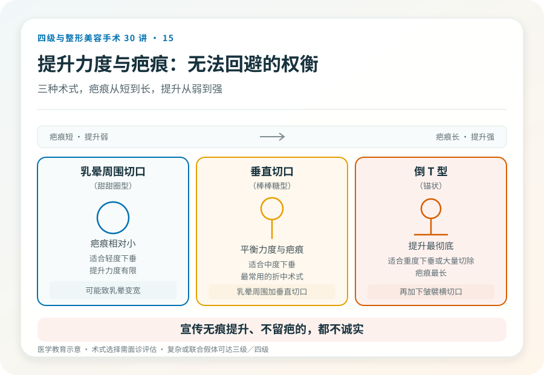

先说结论：乳房下垂矫正术（乳房上提术，mastopexy）通过切除多余皮肤、重新定位乳头乳晕复合体来改善乳房下垂。它改善的是位置和形态，不显著改变体积。手术必然留疤，可能影响感觉和哺乳，复杂或联合假体的术式级别会升高。把它理解成“拉一拉就好”会低估它的代价。
先判断下垂的程度和原因
乳房下垂常见于：
- 产后和哺乳后：皮肤和韧带松弛，腺体萎缩。
- 年龄增长：皮肤弹性下降，腺体退化。
- 体重显著下降后：脂肪和皮肤松弛。
- 发育因素：部分人先天乳房形态松垂。
下垂程度通常分为轻、中、重度，决定了术式和切口范围。轻度下垂有时可以通过假体隆乳（增加体积和支撑）改善，不一定需要上提术；中重度则需要切除皮肤来重塑位置。
几种主要术式
- 乳晕周围切口（甜甜圈型）：仅环绕乳晕切除皮肤，疤痕相对小，适合轻度下垂，但提升力度有限，且可能致乳晕变宽、瘢痕明显。
- 垂直切口（棒棒糖型）：乳晕周围加垂直切口，适合中度下垂，平衡了提升力度和疤痕。
- 倒 T 型（锚状）：再加乳房下皱襞横切口，适合重度下垂或大量切除，提升最彻底但疤痕最长。
术式选择取决于下垂程度、皮肤质量、是否同时放置假体。切口越长，提升越彻底，疤痕也越明显，这是无法回避的权衡。
几个必须正视的风险
- 乳头乳晕坏死：上移距离越大风险越高，是严重并发症。
- 感觉改变或丧失：乳头乳晕感觉可能减退。
- 哺乳障碍：尤其环乳晕切口，可能损伤导管和神经。
- 瘢痕：必然留疤，可能增生、变宽，是核心考量。
- 不对称、形态不满意、乳头位置不佳。
- 出血、血肿、感染、伤口延迟愈合（切口交汇处常见）。
- 日后可能需要修整。
- 复发下垂：随时间、体重波动或再次妊娠可能再次松弛。
“隆乳能解决下垂吗”的常见疑问
轻度下垂合并体积不足时，假体隆乳可能同时改善体积和位置。但中重度下垂（皮肤明显多余）单纯放假体往往不够，反而可能因重量加速下垂，需要联合上提术。是否需要联合，由下垂程度和体积诉求共同决定，不是“想隆就隆”。
哪些人不适合做
- 仍有生育哺乳计划且不能接受影响者。
- 体重未稳定、仍在大幅波动。
- 对疤痕完全不能接受。
- 凝血异常、未控制的慢性病、吸烟者（愈合不良风险高）。
决策前的硬要求
面诊乳房上提，至少做到：选择有资质的机构和主刀；当面评估下垂程度、皮肤弹性、体积状况；讨论术式、切口、是否联合假体的逻辑；理解疤痕、感觉和哺乳的现实；确认机构的麻醉和急救条件。对疤痕的接受度，和乳房缩小术一样，是这个手术的核心前提。
关于“无痕上提”的警惕
任何宣传“乳房上提不留疤”“无痕提升”的都不诚实。乳房上提术的本质是切除皮肤重塑位置，必然留下切口疤痕。把这一点想清楚，能筛掉大量事后失望。
本文用于健康教育，不能替代面诊和个体化评估；乳房上提术须在有相应资质的医疗机构由具备权限的医师开展。